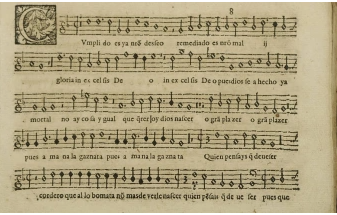

25 de mayo de 2022

Telf: +33678317676
Correo: nramila@ucm.es
Linkedin: https://www.linkedin.com/in/noemi-ramila-diaz-7b577054/
Aquí mis publicaciones
Aquí mis comunicaciones
Como trabajo final de este micro-curso sobre música española del Renacimiento, se deberá elaborar una mini-memoria. Esta estará formada por un tema elegido por el alumno en el que debe desarrollar un aspecto tratado en la lección.
Los pasos a seguir son como se enumera a continuación:
En primer lugar, visionar todos los documentos.
Elegir un tema a tratar.
Realizar una investigación preliminar.
Escribir un resumen de 3 páginas sobre los aspectos principales.
Enviar una copia en formato .docx y .pdf a mi dirección
En el correo se debe indicar: